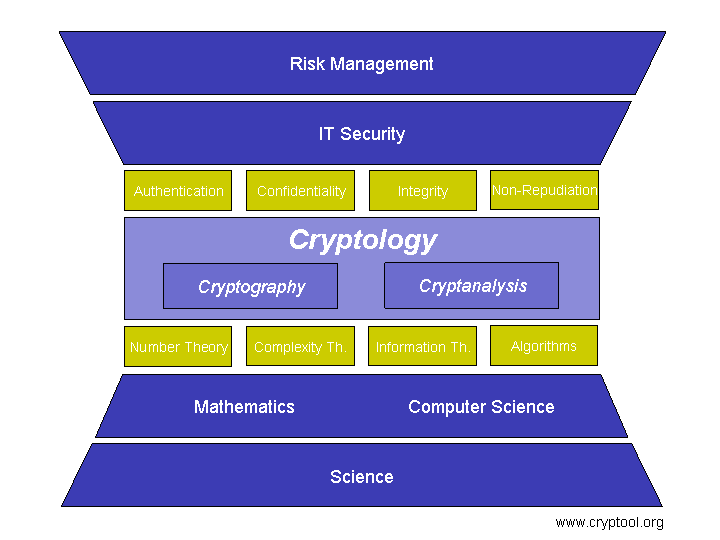

CrypTool implements classic as well as modern methods of cryptography and cryptanalysis. A graphical user interface provides convenient access to these methods, so that they can easily be executed and tested. This allows a quick introduction and gives a better understanding for the possibilities and limitations of certain cryptographic methods.
The first figure gives an overview of aims and components of cryptology, and how CrypTool supports this.
The second figure shows how cryptology can be seen within a broader context from a company or government as well as from a science perspective and how it is linked to the higher ranking areas of IT security, risk management and mathematics and computer science.
A basic understanding of cryptology is necessary to take appropriate measures and controls in order to achieve the objectives of IT security (authentication, confidentiality, integrity, non-repudiation) with an optimal cost-value ratio.

IT security describes a broad range of activities to support the usage of IT systems with security measures in order to provide a protection of electronic information for the corporation, clients and external partners. The objective is to protect sensitive information and processes as well as to minimise any IT related disturbances of business operations.
The measures of IT security include (besides cryptology methods) e.g. security organisation, legal aspects, security monitoring, anti virus measures, patch management, disaster recovery, business continuity, security architectures and awareness for IT security. A good overview of these measures can be found at NIST or at the German information security agency.
Risk management extents the scope of IT security and covers the socially desirable protection of critical infrastructures.
Risk management can be defined as the consciously management of risks. This can include general operational risks or specific financial risks.
Companies, organisations and individuals must deal with all sorts of risks within living memory. The origin of a systematic risk management is based in the financial industry. Today several laws contribute and aim to provide financial control and transparency for corporations (e.g. KonTraG, Sarbanes-Oxley Act or Basel II).
The total risk of a company can be divided into operational risks (e.g. breakdown or limitations of IT systems) or all sorts of financial risks (credit risks, liquidity risks, market risks, liability risks etc.).
Several approaches exist to identify, measure, monitor and control risks.
Risk management does not necessarily aim at complete risk prevention. Instead it tries to identify appropriate actions under a cost and benefit perspective (appropriate measures could also include the insurance of certain risks).
Sources: